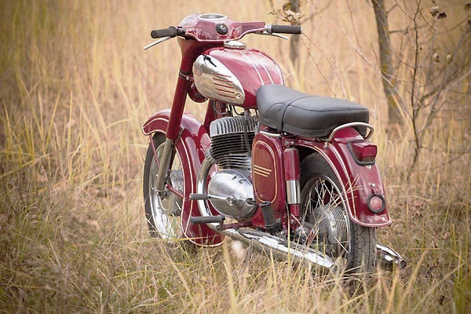
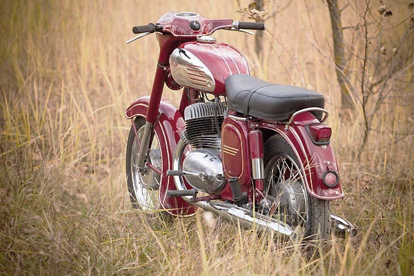

В народе мотоцикл Ява 350 получил немалую популярность. Несмотря на то, что мотоцикл уже давно не выпускается, он до сих пор пользуется немалым спросом. Внешний вид мотоцикла отвечает всем требованиям потребителя.
Важным фактором при выборе данной модели является еще и то, что чешский производитель не канул в лету подобно многим предприятиям советских времен, а продолжает вполне успешно функционировать, выпуская новые мотоциклы и качественные оригинальные запчасти.
Мотоцикл был куплен для восстановления 1,5 года назад. Год полностью реставртровался в оригинальное состояние. Использовались оригинальные запчасти из Чехии.